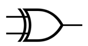

第二章
FPGA与CPLD的结构原理
主要内容
- PLD的基本原理
- CPLD的结构和原理
- FPGA的结构原理
- 硬件测试
- PLD产品概述
- CPLD/FPGA的编程与配置
2.1 PLD(Programmable logic devices, 可编程逻辑器件)
数字电路都是由基本门构成，包括：与门、或门、非门、传输门等。
基本的两种数字电路，包括：逻辑组合电路（输出由输入信号的组合来决定）、时序电路（输出由输入和当前状态来决定）。
事实上，任何的逻辑组合电路都可以由与非门或与或非门来组成
任何的时序电路都可以由组合电路和存储元件（包括锁存器、触发器、存储器）等来组成。
2.1.1 可编程电路结构
可编程电路结构：乘积项逻辑可编程结构。
2.1.2 PLD的分类
按集成度分类
2.1.2 PLD的分类
按结构分类
| 乘积项结构器件，其基本结构为“与-或”阵列，大部分简单PLD和CPLD属于这种 | 基于查找表的器件，多数FPGA |
2.1. PLD的分类
按编程工艺分类
- 一次性可编程器件（OTP）：熔丝(fuse)型、反熔丝（antifuse）型
- 紫外线擦除电可编程逻辑器件，EPROM型
- 电可擦写编程器件，EEPROM型
- 静态随机存取存储器-SRAM-型
- flash型
2.2 简单PLD结构原理
2.2.1 逻辑元件符号表示
| 标准 | 非门（NOT） | 与门（AND） | 或门（OR） | 异或门（XOR） |
| 逻辑表达式 | $\overline{A}=NOT A$ | $F=A\cdot B$ | $F=A+B$ | $F=A\bigoplus B$ |
| IEEE-1984版 | ||||
| IEEE-1991版(MIL/ANSI) |  | |||
| PLD中的表示 |
2.2.2 PROM结构原理
可编程只读存储器，Programmable read-only memory, PROM。不单用于做存储器，也可以用来作为PLD。
一个PROM器件主要部件：译码器，PROM单元阵列，输出缓冲

2.2.2 PROM结构原理-逻辑阵列
地址译码器用于存储阵列的行（称为字线，word lines）选择，行选择的要求是在任何时刻只有一行是被选中的（以高电平，或1表示），其他都是未选中（以低电平，或0表示），有$n$条地址线，对应有相应的$p$条存储行（$p=2^n$)，下面以2条地址线为例，共有4条选择字线，假设地址线为$A_1A_0=01$， $$ \begin{align*} W_0 &= \overline{A_1}\cdot\overline{A_0}=0 \\ W_1 &= \overline{A_1}\cdot A_0 =1\\ W_2 &= A_1\cdot\overline{A_0} =0\\ W_3 &= A_1\cdot A_0 = 0 \end{align*} $$，可见，只有第2根字线被选中，其他未选中。
从上面的公式来看，地址译码器实际上是一个"与阵列",而同样可以得到存储单元在取出数据的时候其实是一个"或阵列"。

举例：半加器
| A | B | S | C |
| 0 | 0 | 0 | 0 |
| 0 | 1 | 1 | 0 |
| 1 | 0 | 1 | 0 |
| 1 | 1 | 0 | 1 |
由此，$S=\overline{A}\cdot B+A\cdot\overline{B}$, $C=A\cdot B$
用PROM来表示：$S=\overline{A}\cdot B+A\cdot\overline{B}$, $C=A\cdot B$

当进行编程时，与阵列是固定的，但是可以生成或阵列的PLD编程文件，即熔丝图文件（Fuse Map）.PROM仅适合逻辑组合电路。
2.2.3 PLA结构原理
PLA的与阵列和或阵列都可以编程，使得利用率有很大提高(6*3的PLA和8*3的PROM大部分应用中相等效。)，虽然现在已经在独立的PLD芯片中被淘汰，但是ASIC中还是有使用。
2.2.4 PAL结构原理
PAL的或阵列不可编程，与阵列可以编程，简化编译，输出可以反馈互联。PAL加上锁存器和寄存器后，就可以实现时序功能。缺点是结构比较固化。